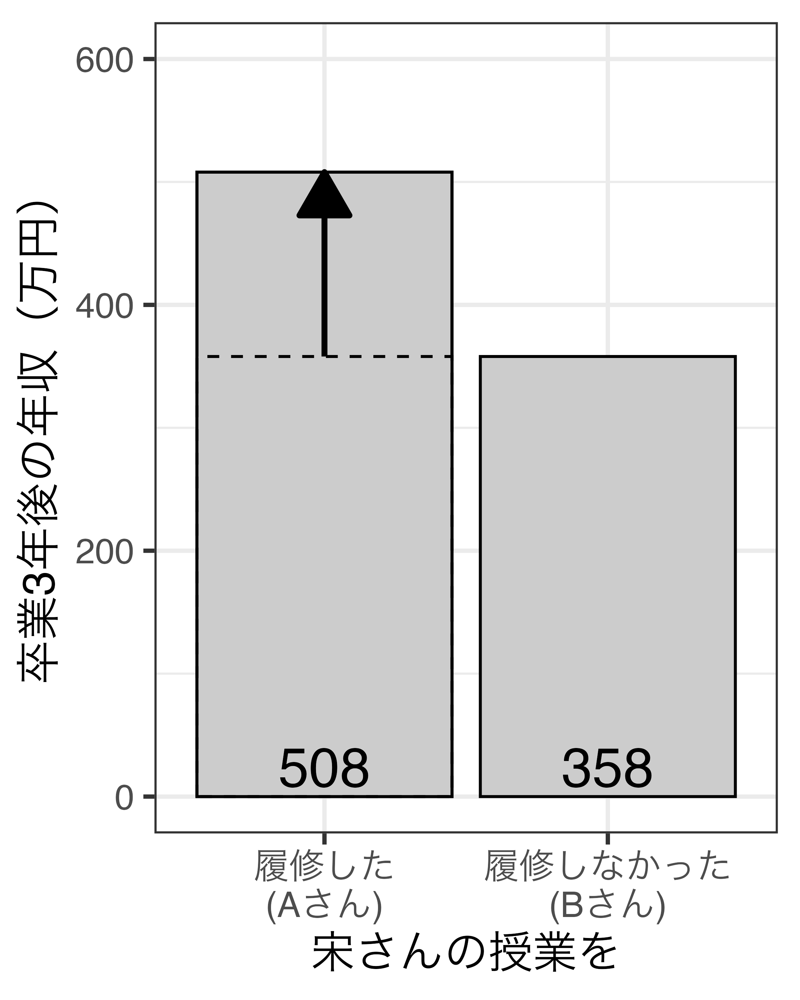
2/ 因果関係の考え方
因果関係：原因（X）と結果（Y）の関係
アメリカにおける1世帯当たりと年間果物消費量とカナダ国鉄の株価の関係
ワシントンDC内の政治学者数とWhole Foodsに対する顧客満足度の関係
XがYの間に相関関係が存在する場合、XとYの間には因果関係が存在するのか
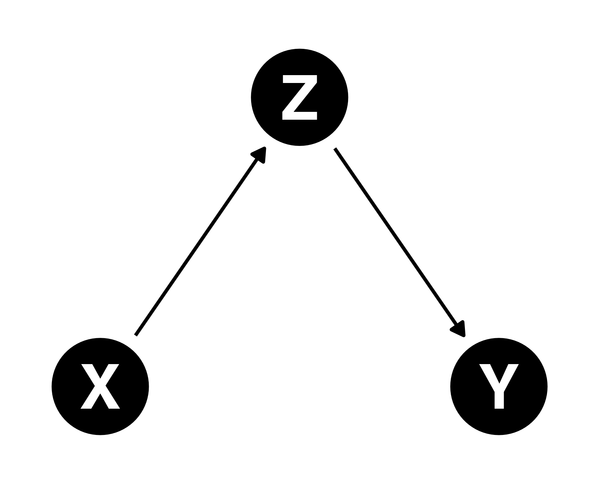
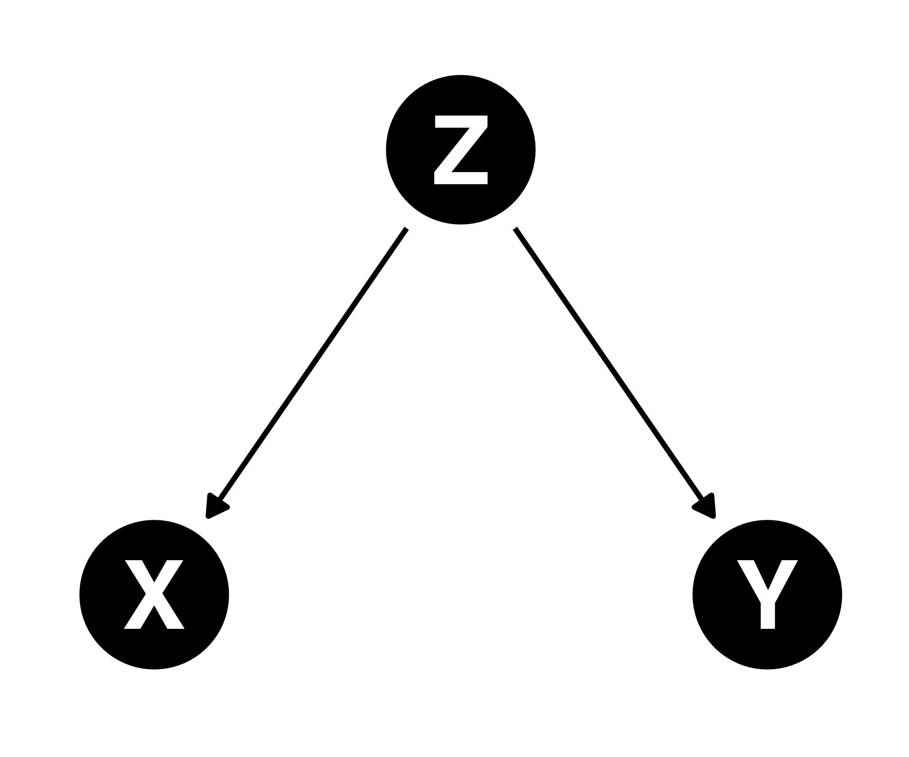
ゲームオタクほど身長が伸びる?
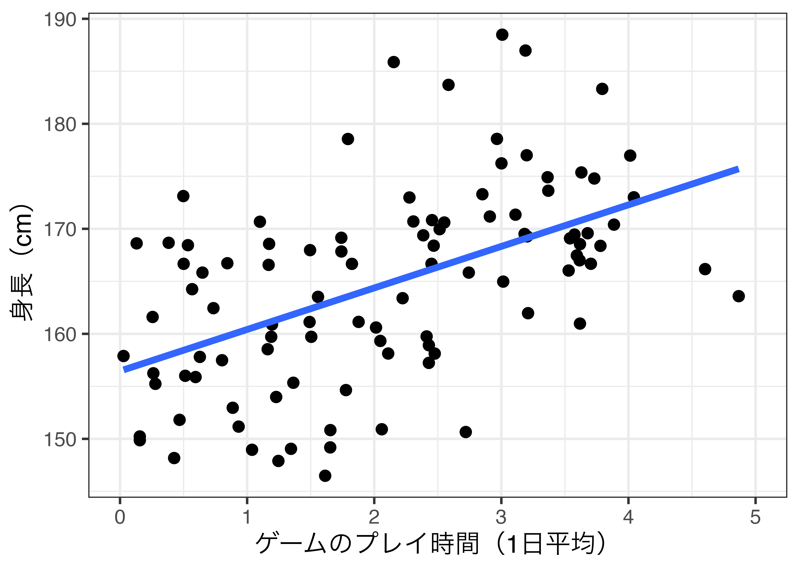性別で条件付けると因果効果は確認されない
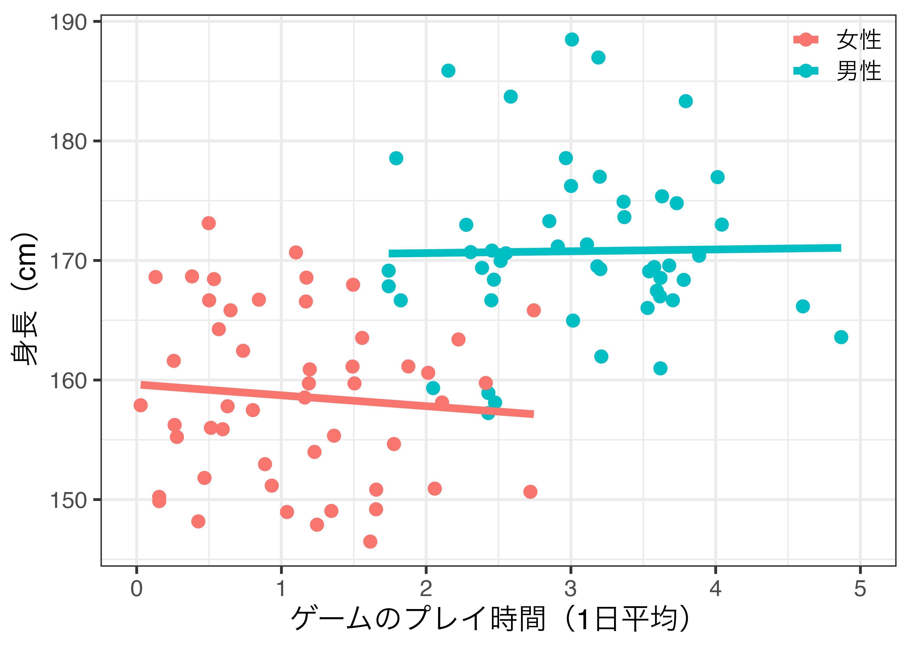職業訓練を受けても年収は上がらない?
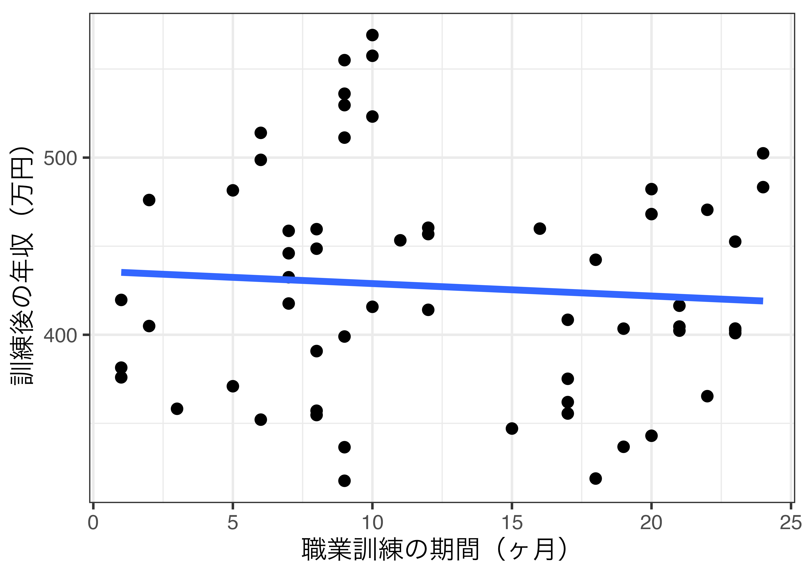訓練前の年収で条件付けると正の効果が確認できる
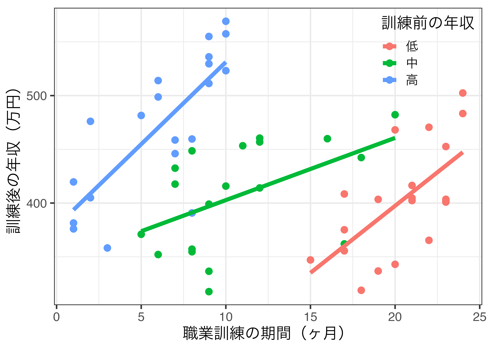相関は因果の必要条件でも、十分条件でも、必要十分条件でもない
“Conditioning is the soul of statistics”（Blitzstein and Hwang 2019, p.46）
問い：因果推論スキルを身につければ年収が上がるか
宋さんの授業を履修すれば年収は上がるか
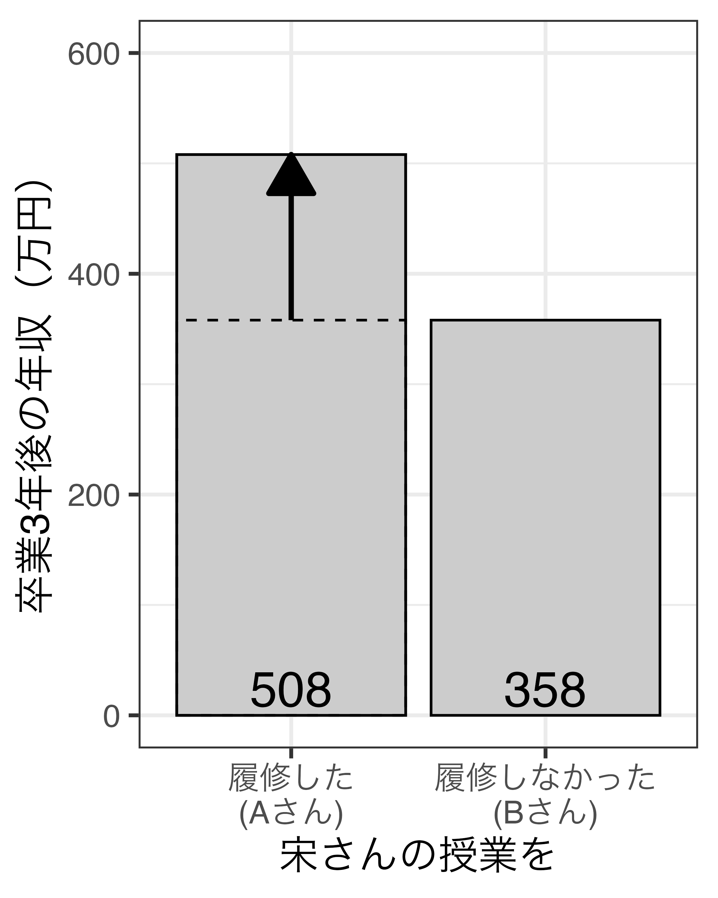
宋さんの授業を履修すれば年収は上がるか
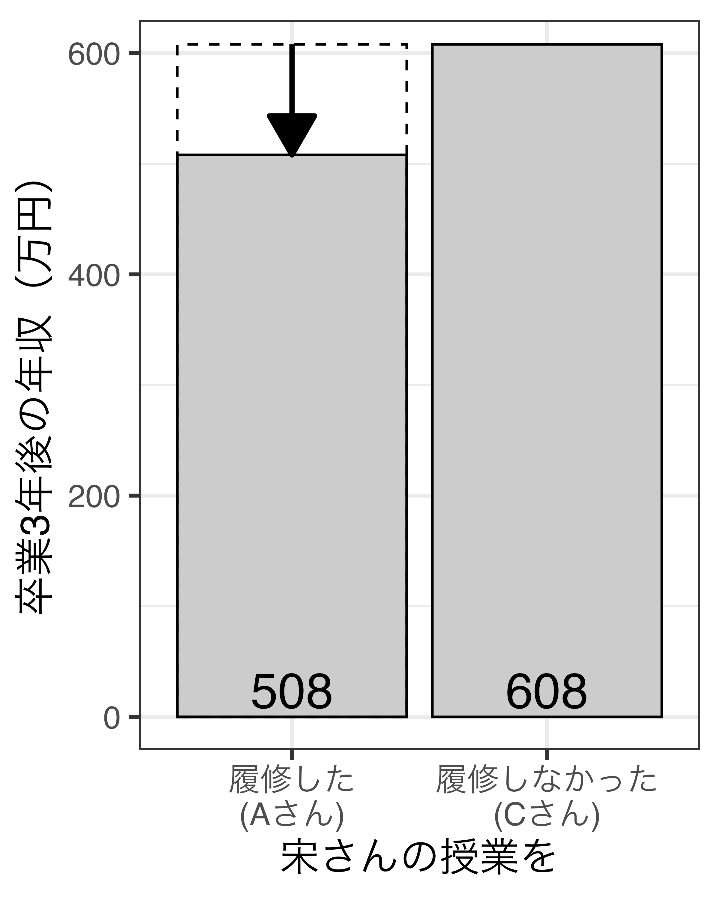
比較対象によって因果効果の推定値が異なる
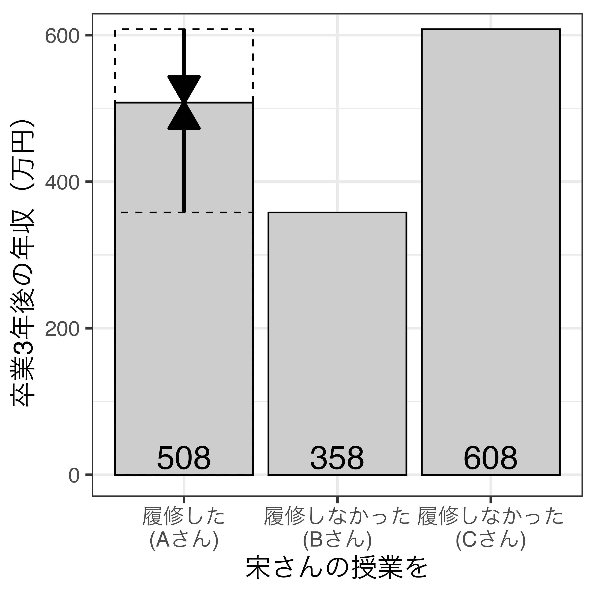
どの比較が適切か1
| 比較 | 因果効果の推定値 |
|---|---|
| A vs. B | 150万円2 |
| A vs. C | -100万円3 |
なぜAさんは宋さんの授業を履修しようと思ったのか
理由3：この授業を履修すると年収が上がると思ったから
啓発活動は投票率を上げるか
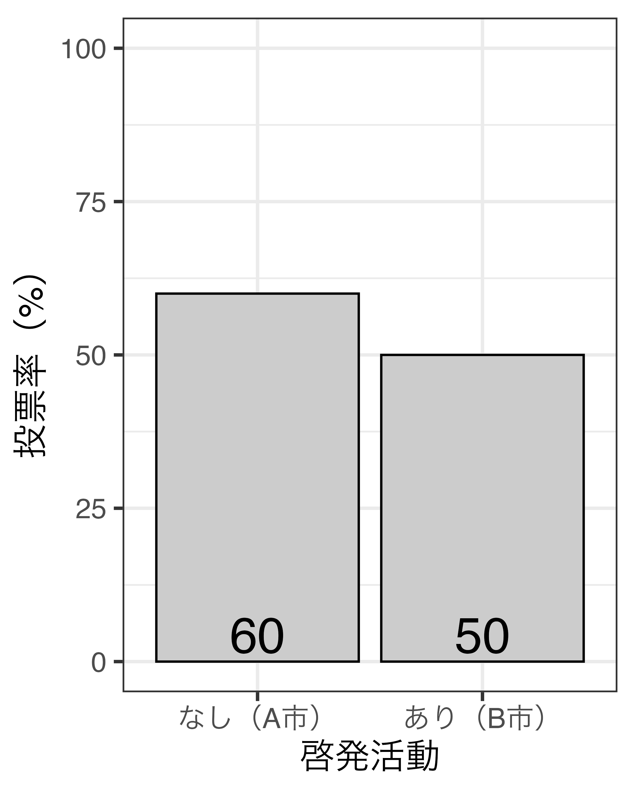
なぜB市は予算を使ってまで啓発活動をしようと思ったのか
因果推論における理想の比較対象は「もし\(\bigcirc \bigcirc\)したら/しなかったら…」
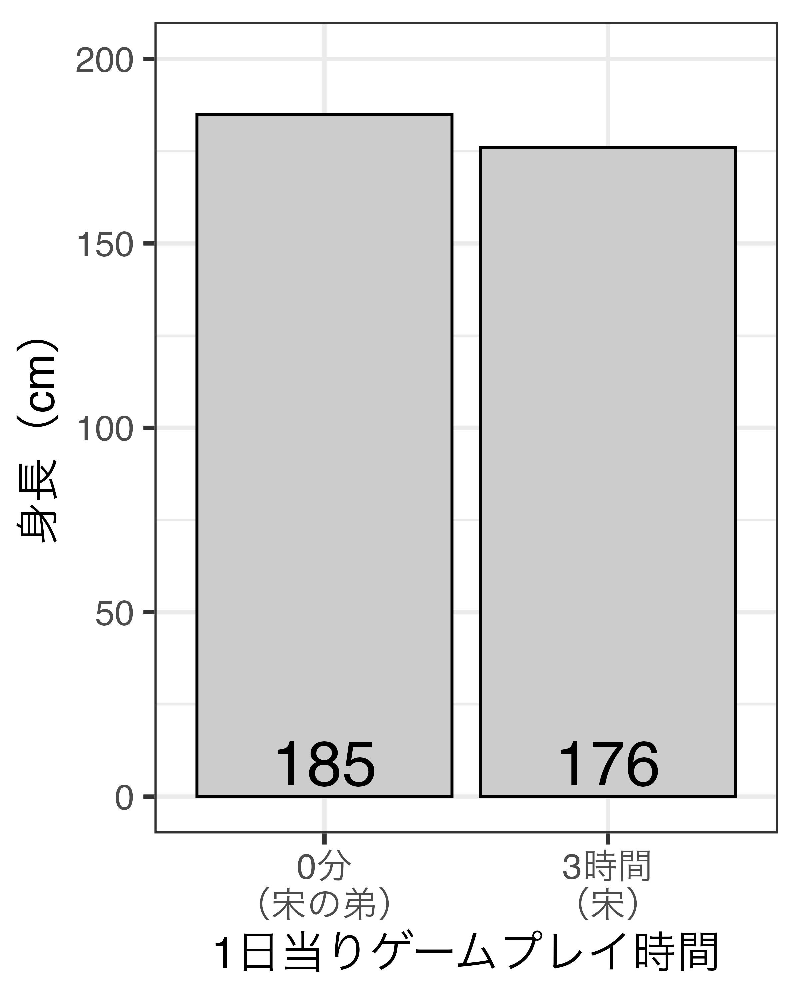
潜在的結果枠組み（Potential outcome framework）
特定の固定が処置を受けた/受けなかった場合の結果変数の値
| \(i\) | \(D_i\) | \(Y_i(0)\) | \(Y_i(1)\) |
|---|---|---|---|
| 1 | 0 | 344 | 444 |
| 2 | 0 | 455 | 505 |
| 3 | 0 | 479 | 379 |
| 4 | 1 | 404 | 554 |
| 5 | 1 | 295 | 395 |
| 6 | 1 | 298 | 248 |
個体レベルにおける処置効果（individual treatment effect; ITE）
\[ \textsf{ITE}_i = Y_i (1) - Y_i (0) \]
| \(i\) | \(D_i\) | \(Y_i(0)\) | \(Y_i(1)\) | \(\textsf{ITE}_i\) |
|---|---|---|---|---|
| 1 | 0 | 344 | 444 | 100 |
| 2 | 0 | 455 | 505 | 50 |
| 3 | 0 | 479 | 379 | -100 |
| 4 | 1 | 404 | 554 | 150 |
| 5 | 1 | 295 | 395 | 100 |
| 6 | 1 | 248 | 248 | 0 |
平均処置効果（average treatment effect; ATE）：ITEの平均
\[ \textsf{ATE} = \frac{1}{n} \sum_i^n \bigl( \underbrace{Y_i (1) - Y_i (0)}_{\mathsf{ITE}} \bigr) = \mathbb{E}[Y_i(1)] - \mathbb{E}[Y_i(0)] \]
| \(i\) | \(D_i\) | \(Y_i(0)\) | \(Y_i(1)\) | \(\textsf{ITE}_i\) |
|---|---|---|---|---|
| 1 | 0 | 344 | 444 | 100 |
| 2 | 0 | 455 | 505 | 50 |
| 3 | 0 | 479 | 379 | -100 |
| 4 | 1 | 404 | 554 | 150 |
| 5 | 1 | 295 | 395 | 100 |
| 6 | 1 | 248 | 248 | 0 |
| 平均 | 370.8 | 420.8 | 50 |
因果推論の根本問題（fundamental problem of causal inference）
| \(i\) | \(D_i\) | \(Y_i(0)\) | \(Y_i(1)\) | \(\textsf{ITE}_i\) |
|---|---|---|---|---|
| 1 | 0 | 344 | ? | |
| 2 | 0 | 455 | ? | |
| 3 | 0 | 479 | ? | |
| 4 | 1 | 554 | ? | |
| 5 | 1 | 395 | ? | |
| 6 | 1 | 248 | ? | |
| 平均 | ? |
ITEの平均値としてのATEは推定不可能
| \(i\) | \(D_i\) | \(Y_i(0)\) | \(Y_i(1)\) | \(\textsf{ITE}_i\) |
|---|---|---|---|---|
| 1 | 0 | 344 | ? | |
| 2 | 0 | 455 | ? | |
| 3 | 0 | 479 | ? | |
| 4 | 1 | 554 | ? | |
| 5 | 1 | 395 | ? | |
| 6 | 1 | 248 | ? | |
| 平均 | 426 | 399 | -27 |
統計的因果推論ではATTが推定対象となるケースが多い1
| \(i\) | \(D_i\) | \(Y_i(0)\) | \(Y_i(1)\) | \(\textsf{ITE}_i\) |
|---|---|---|---|---|
| 4 | 1 | 404 | 554 | 150 |
| 5 | 1 | 295 | 395 | 100 |
| 6 | 1 | 248 | 248 | 0 |
| 平均 | 83.3 |
| \(i\) | \(D_i\) | \(Y_i(0)\) | \(Y_i(1)\) | \(\textsf{ITE}_i\) |
|---|---|---|---|---|
| 1 | 0 | 344 | 444 | 100 |
| 2 | 0 | 455 | 505 | 50 |
| 3 | 0 | 479 | 379 | -100 |
| 平均 | 16.7 |
私たちが本当に知りたいのはITE1
因果関係の考え方